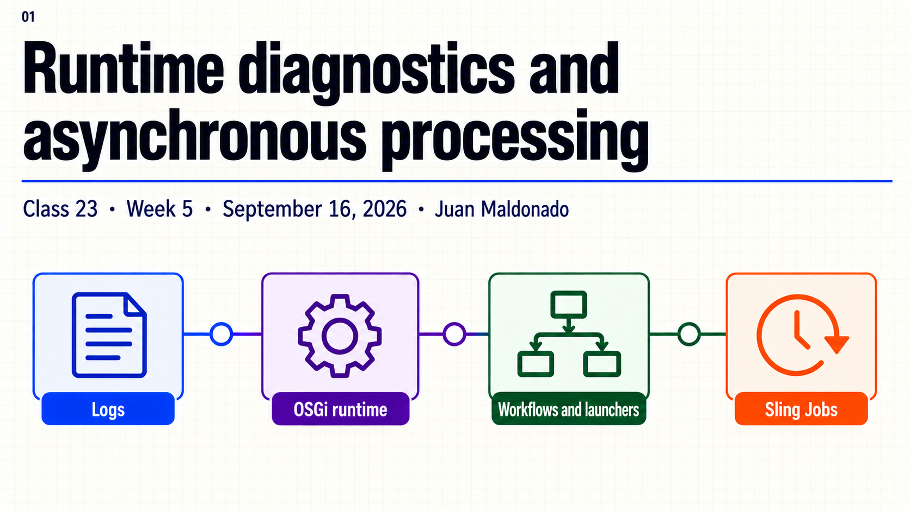
Topic summary
A successful build does not establish what is running in AEM. A bundle can be Active while one of its components has an unsatisfied reference; a valid configuration file may differ from the values selected on the affected instance. Diagnostics start with a concrete symptom, instance, time window and execution identifier.
Workflows describe process steps and expose execution history. Launchers select repository events that start workflows. Sling Jobs separate submission from processing and support retries according to queue policy. Their responsibilities and states differ, so understanding the current operation comes before restarting or retrying it.
- Read log context and exception causes on the affected instance.
- Distinguish bundle resolution from Declarative Services activation.
- Inspect effective values and the correct configuration instance.
- Separate a workflow model, payload, runtime model and execution.
- Recognize launcher matching rules and Sling Job results.
- Check side effects and duplicate risk before retrying.
30-minute agenda
| Time | Slides | Focus |
|---|---|---|
| 0–3 | 1–2 | Opening and symptom context. |
| 3–10 | 3–5 | Logs, OSGi states and configuration. |
| 10–19 | 6–8 | Workflow structure, a simple logging example and launchers. |
| 19–25 | 9–10 | Sling Jobs, retries and side effects. |
| 25–28 | 11 | Key takeaways. |
| 28–30 | 12 | Questions. |
Complete slide deck
Copy each complete image to PowerPoint or download its PNG. A small Java example and step-by-step Author instructions follow the deck.
{kind=link}
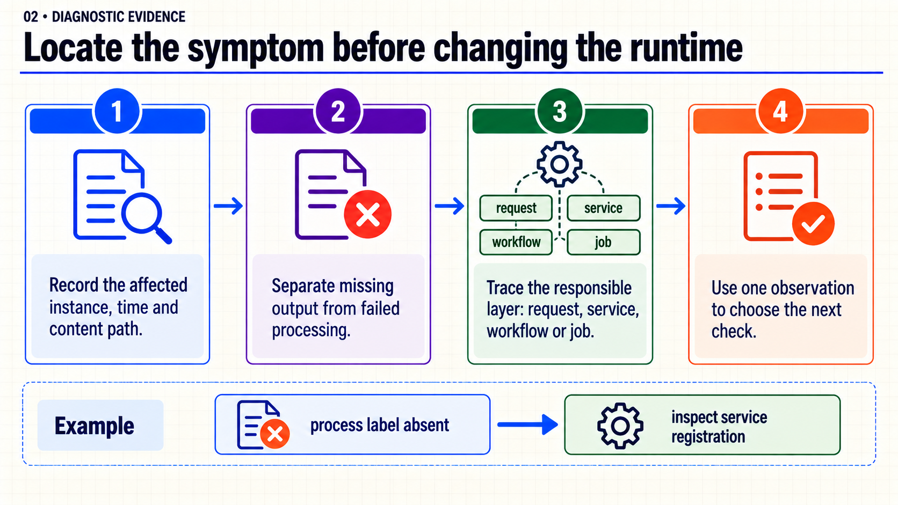
{kind=link}
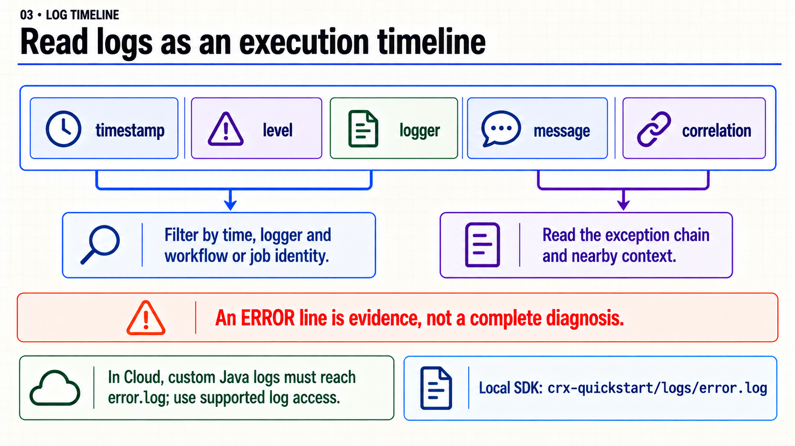
{kind=link}
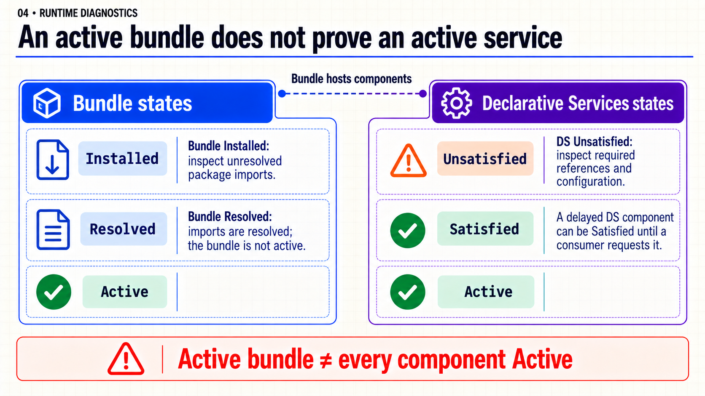
{kind=link}
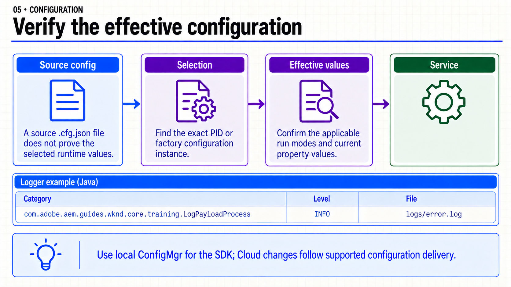
{kind=link}
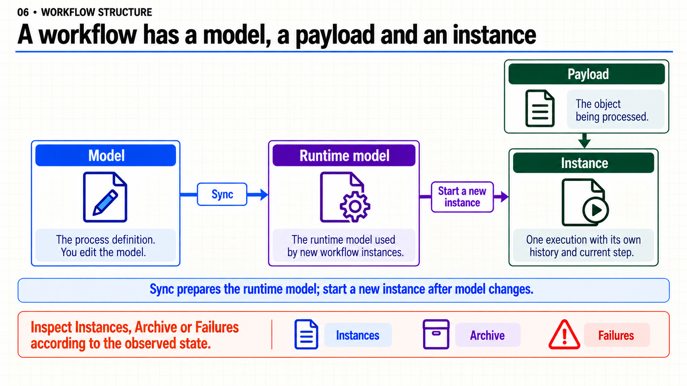
{kind=link}
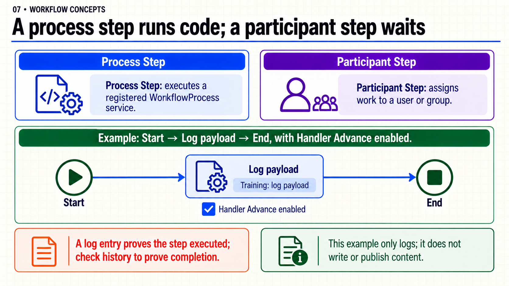
{kind=link}
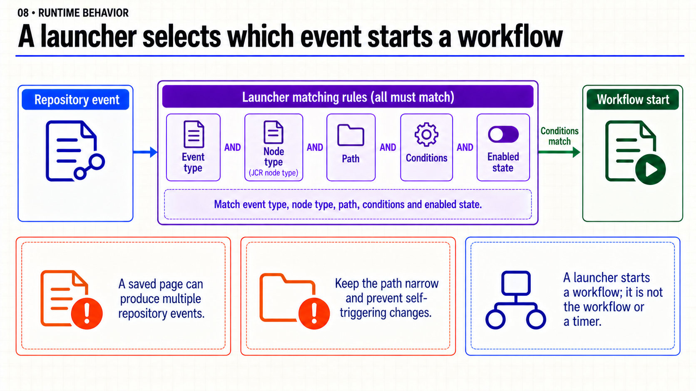
{kind=link}
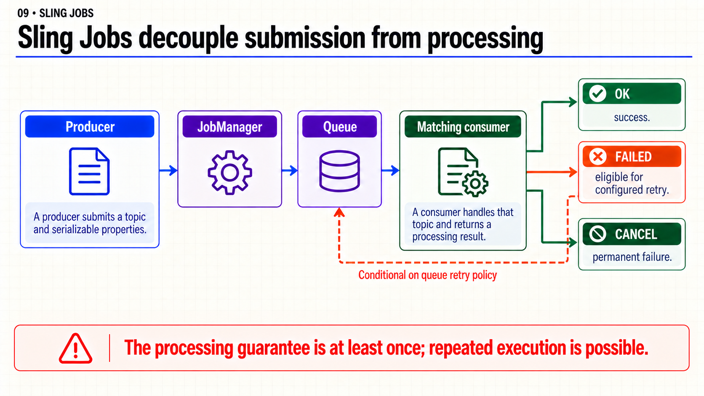
{kind=link}
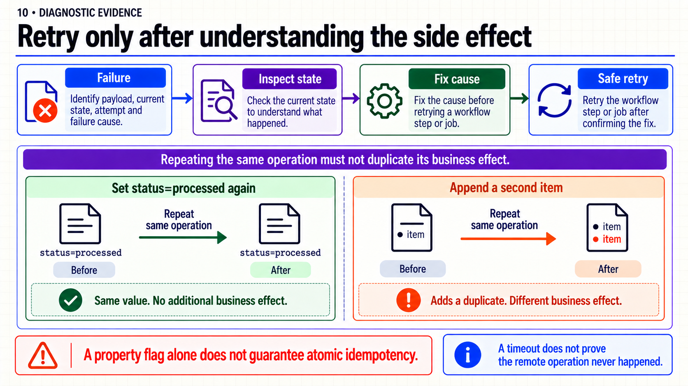
{kind=link}
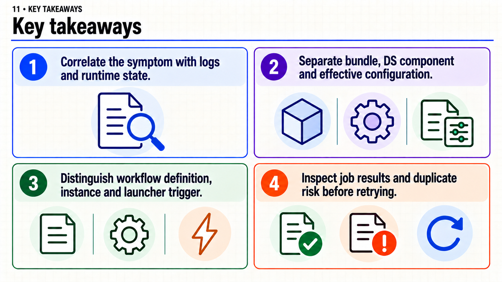
{kind=link}
{kind=link}
Ejemplo simple · Un workflow que escribe una línea en el log
El ejemplo une tres piezas: un servicio Java, un logger y un modelo con un único Process Step. No modifica ni publica el payload. Puedes usarlo para ver qué diferencia hay entre instalar código, ejecutar un paso y completar un workflow.
Necesitas tu proyecto WKND Sites tradicional o Archetype, un build base que funcione y Author SDK en http://localhost:4502, con permisos para ConfigMgr y Workflow Models. Los pasos de consola se refieren al SDK local. Usa una página de prueba sin datos sensibles; el ejemplo registra su ruta.
1. Copiar una sola clase
Crea este archivo en tu proyecto AEM, no en el repositorio de documentación:
core/src/main/java/com/adobe/aem/guides/wknd/core/training/LogPayloadProcess.java
package com.adobe.aem.guides.wknd.core.training;
import com.adobe.granite.workflow.WorkflowSession;
import com.adobe.granite.workflow.exec.WorkItem;
import com.adobe.granite.workflow.exec.WorkflowProcess;
import com.adobe.granite.workflow.metadata.MetaDataMap;
import org.osgi.service.component.annotations.Component;
import org.slf4j.Logger;
import org.slf4j.LoggerFactory;
@Component(
service = WorkflowProcess.class,
property = "process.label=Training: log payload")
public class LogPayloadProcess implements WorkflowProcess {
private static final Logger LOG = LoggerFactory.getLogger(LogPayloadProcess.class);
@Override
public void execute(WorkItem item, WorkflowSession session, MetaDataMap args) {
LOG.info("Training workflow: instance={}, payloadType={}, payload={}",
item.getWorkflow().getId(),
item.getWorkflowData().getPayloadType(),
item.getWorkflowData().getPayload());
}
}
En Archetype, cambia la declaración package y la carpeta Java al prefijo de tu proyecto; usa también ese nombre en la categoría del logger. Mantén los imports com.adobe.granite.workflow: no los mezcles con la API antigua com.day.cq.workflow. Las dependencias del SDK, OSGi y SLF4J ya deben estar en el baseline. Conserva el plugin Bnd que genera OSGI-INF; no basta copiar un .class a AEM.
Desde la raíz de tu proyecto:
mvn -pl core -am package
Instala con el perfil local de tu baseline. En WKND/Archetype, si tu POM define autoInstallSinglePackage para Author en 4502:
mvn clean install -PautoInstallSinglePackage
Abre /system/console/bundles y comprueba la versión y el estado Active de tu bundle. En /system/console/components, busca el nombre completo de LogPayloadProcess: puede aparecer Satisfied antes de que un consumidor solicite el servicio. La propiedad process.label es la etiqueta que debe aparecer en el selector del Process Step.
2. Configurar el logger en la instancia
- Abre
http://localhost:4502/system/console/configMgr. - Busca Apache Sling Logging Logger Configuration. Crea una instancia con +, o edita la que ya cubra exactamente esta clase; evita duplicarla.
- Configura estos campos y conserva los demás valores existentes:
| Campo | Valor |
|---|---|
| Log Level | INFO |
| Log File | logs/error.log |
| Logger / Loggers | com.adobe.aem.guides.wknd.core.training.LogPayloadProcess |
- Guarda. En
/system/console/slinglog, confirma que esa categoría tiene el nivel y archivo elegidos. Este logger pertenece a una instancia de la factoryorg.apache.sling.commons.log.LogManager.factory.config; la clase del workflow es la categoría, no ese factory PID. - Abre
crx-quickstart/logs/error.logdentro de la carpeta donde arrancaste Author. Puedes verlo en el IDE o, desde esa carpeta, ejecutar:
tail -f crx-quickstart/logs/error.log
Todavía no esperes el mensaje: guardar el logger o instalar el bundle no ejecuta el workflow. Usa Ctrl+C para salir de tail cuando termines.
3. Crear y ejecutar el modelo en Author
- Abre Tools → Workflow → Models → Create → Create Model. Usa título
Training log payloady nombretraining-log-payload. - Selecciona tu modelo y pulsa Edit. Si viene con un
Step 1de ejemplo, elimina sólo ese paso. Conserva Start y End. - Abre el panel lateral de pasos y arrastra un Process Step entre Start y End. En sus propiedades, pon título
Log payload. - En la pestaña Process, selecciona
Training: log payload, activa Handler Advance y deja Arguments vacío. Confirma el diálogo. El flujo debe ser Start → Log payload → End. - Mantén Transient Workflow desactivado en las propiedades del modelo para conservar el historial del ejemplo. Pulsa Sync y espera la confirmación. Sync prepara el modelo para nuevas ejecuciones; no inicia ninguna.
- Regresa a Models, selecciona
Training log payloady pulsa Start Workflow. En Payload, selecciona con el picker una página de prueba existente en tu sitio. No escribas una ruta del ejemplo si no existe en tu instancia. Inicia el workflow. - En el log busca
Training workflow:. Debe incluir el ID real de la instancia, el tipo de payload y la ruta seleccionada. En Tools → Workflow → Archive, localiza la ejecución por modelo/payload y abre History para confirmar que llegó a End. Puede completarse tan rápido que no alcances a verla en Instances.
Qué significa el resultado: la línea confirma que entró a execute; el historial confirma el avance del workflow. El método Java no llama a session.complete: el avance se delegó a Handler Advance.
| Si observas esto | Revisa esto |
|---|---|
No aparece Training: log payload en el selector. |
Bundle instalado, componente DS, interfaz WorkflowProcess y propiedad process.label. |
| No aparece la línea. | Instancia iniciada, modelo sincronizado, paso elegido y categoría/nivel del logger. |
| Aparece la línea, pero no termina. | Paso actual e historial; Handler Advance y posibles pasos Participant que hayan quedado en el modelo. |
| La ejecución no aparece en Archive. | Instances y Failures; filtro de búsqueda, retención y que el modelo no sea transient. |
Cuando termines, puedes conservar la clase y el modelo para consultar el ejemplo. Si creaste una configuración de logger sólo para verlo, elimínala o restaura sus valores anteriores. La configuración Cloud se entrega por el mecanismo soportado del proyecto; no depende de cambios manuales en la consola local.
Ejemplo de lectura · Inspeccionar un launcher sin cambiarlo
Este ejemplo permite reconocer la configuración existente sin automatizar nuevas ejecuciones:
- Abre Tools → Workflow → Launchers en tu SDK.
- Selecciona un launcher existente y abre View Properties, o Edit si ésa es la opción disponible. Al terminar usa Cancel, sin guardar.
- Localiza Event Type, Nodetype, Path/Glob, Condition, Workflow Model, estado Enabled y Exclude List, según los nombres de tu versión.
- Lee la regla como una frase: «si ocurre este evento en este tipo de nodo y ruta, cumple estas condiciones y el launcher está habilitado, inicia este modelo». El
NodetypeJCR no essling:resourceType. - Si Exclude List nombra propiedades o
event-user-data, identifica qué cambios se ignoran. No guardes una página para probar una regla amplia que pertenezca al sistema. El ejemplo anterior ya permite iniciar tu workflow manualmente.
Un launcher no contiene la implementación del proceso ni es un temporizador. Si la consola está vacía en tu baseline, no hay una regla instalada que inspeccionar; la ejecución manual del ejemplo anterior sigue siendo válida.